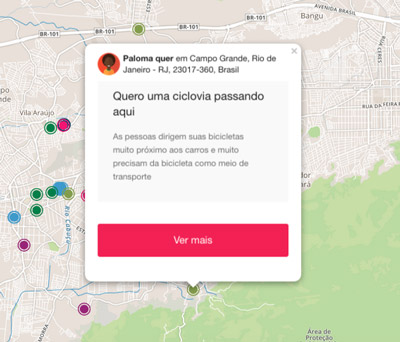

Demandas por melhorias estão presentes em todos os pontos da cidade, e na maior parte das vezes são muito localizadas. Aqui falta uma travessia para pedestres, ali poderia existir uma ciclovia, ou quem sabe naquela rua o tráfego de veículos pudesse ser restrito.
Criado para acolher e planificar este tipo de necessidade, o Mapeando é uma plataforma desenvolvida pelo LAB.Rio e será constantemente melhorada no dia-a-dia com a ajuda e feedback dos usuários.
O Mapeando serve de ferramenta para a participação ativa. A representação visual de muitas demandas sobrepostas em uma mesma região indica que muitas pessoas partilham de uma mesma necessidade.
Por meio do mapa, a população tem à sua disposição mais um mecanismo de comunicação direta com poder público. As demandas indicadas no mapa são compiladas e encaminhadas aos órgãos competentes dentro da estrutura municipal, que pode e deve usá-las como subsídios para a tomada de decisões.

Rua São Clemente, 360, Botafogo Rio de Janeiro - RJCEP 22260-000Brasil
+55 (21) 2976-9708